Neutomni
Captures desktop
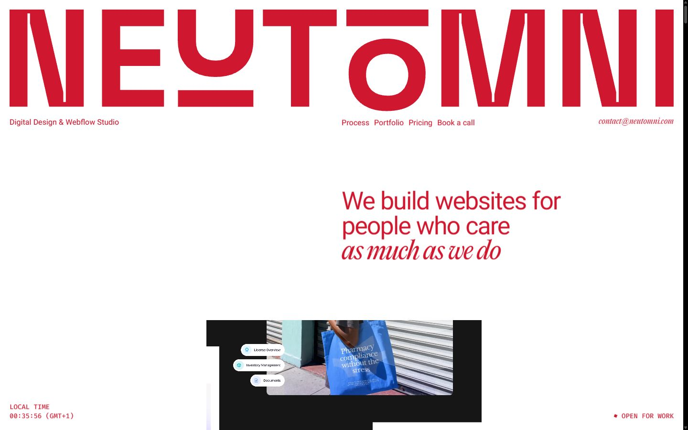

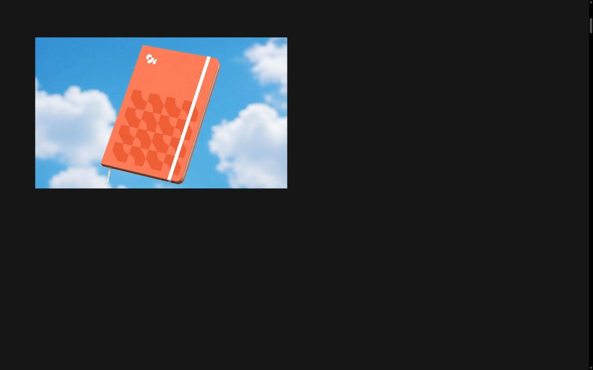
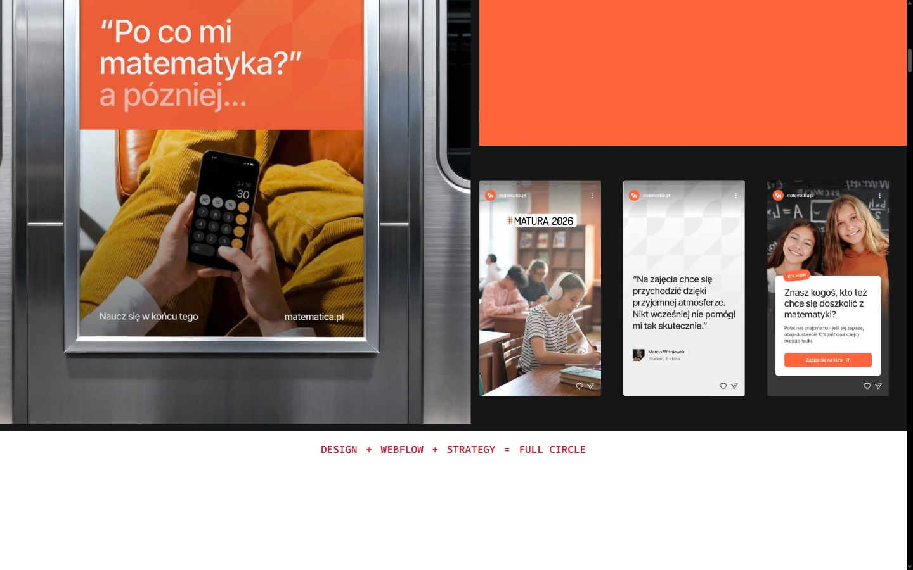
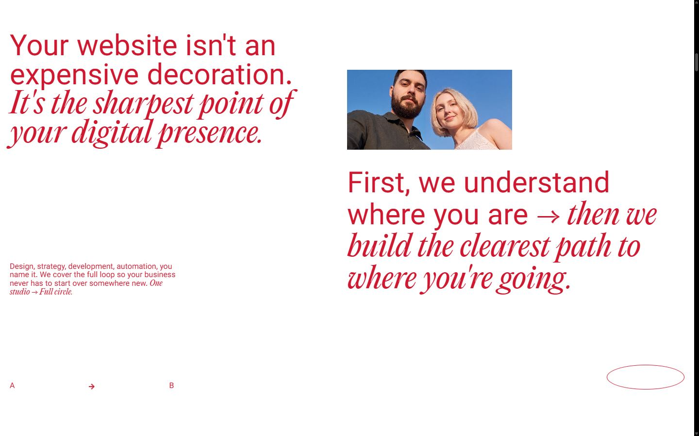
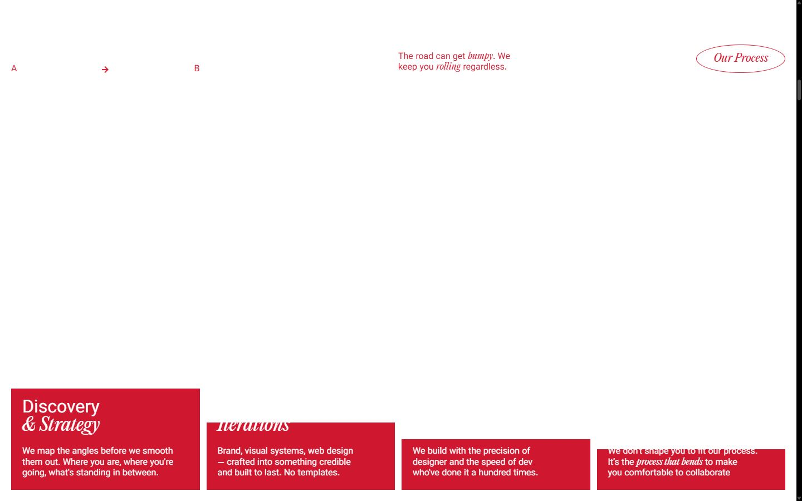
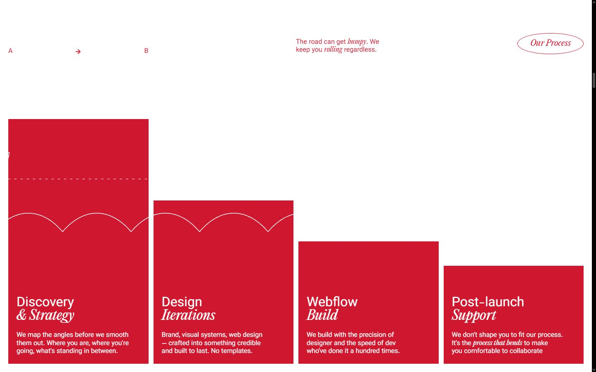
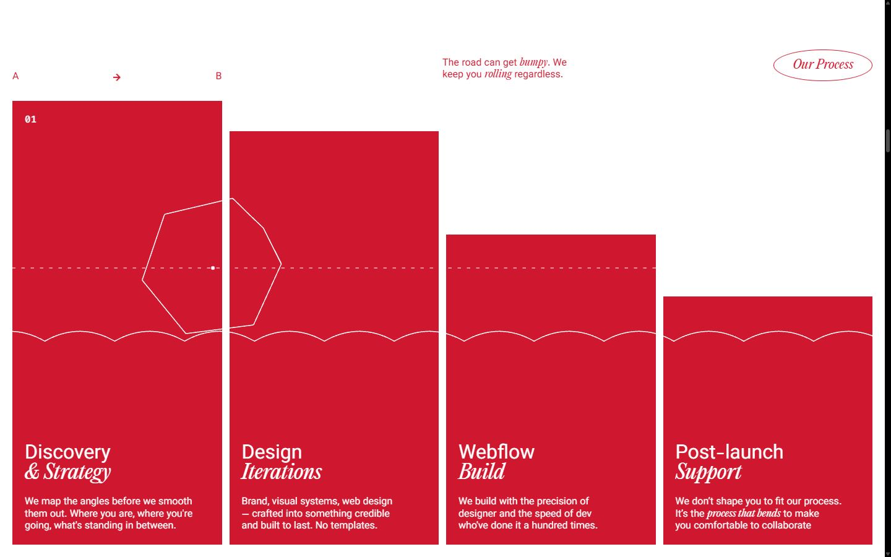
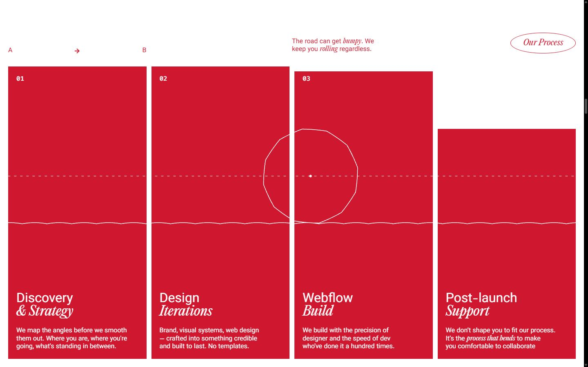
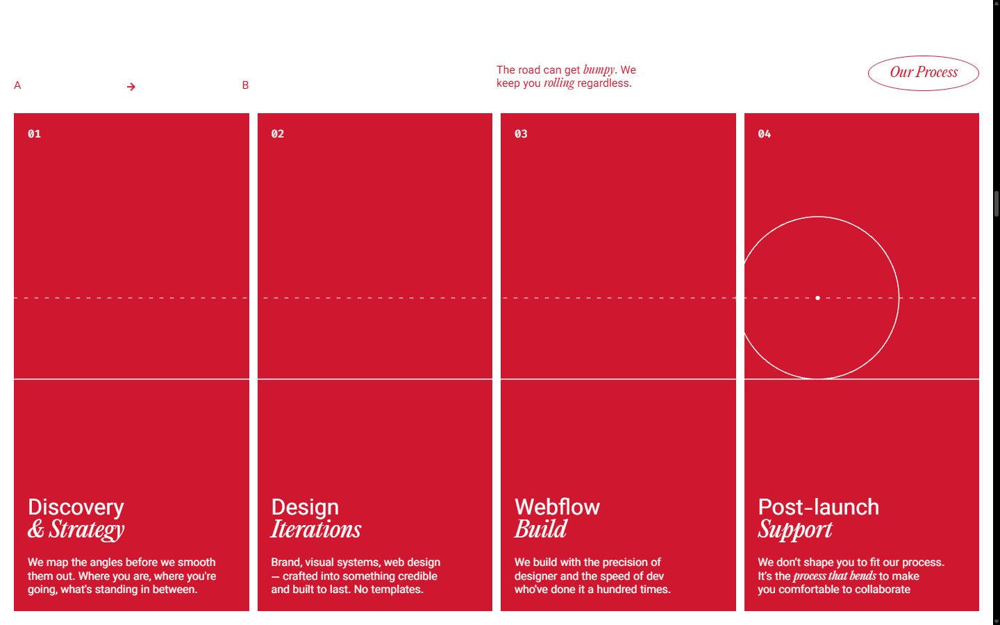
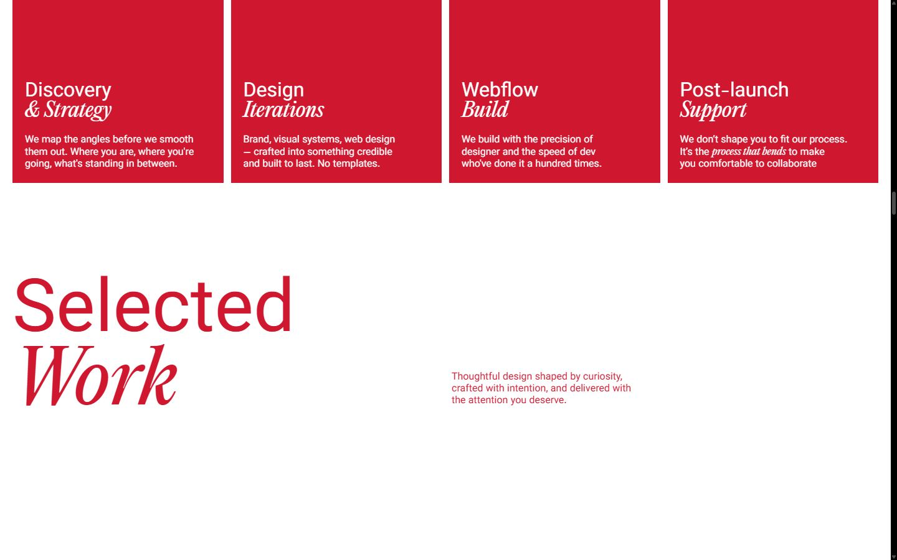
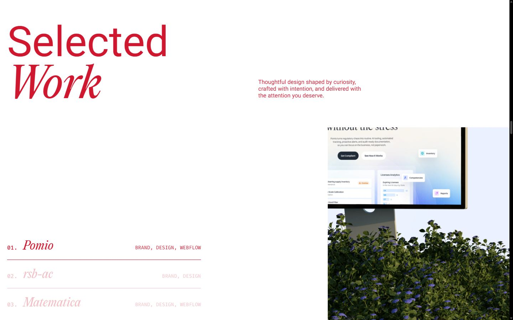
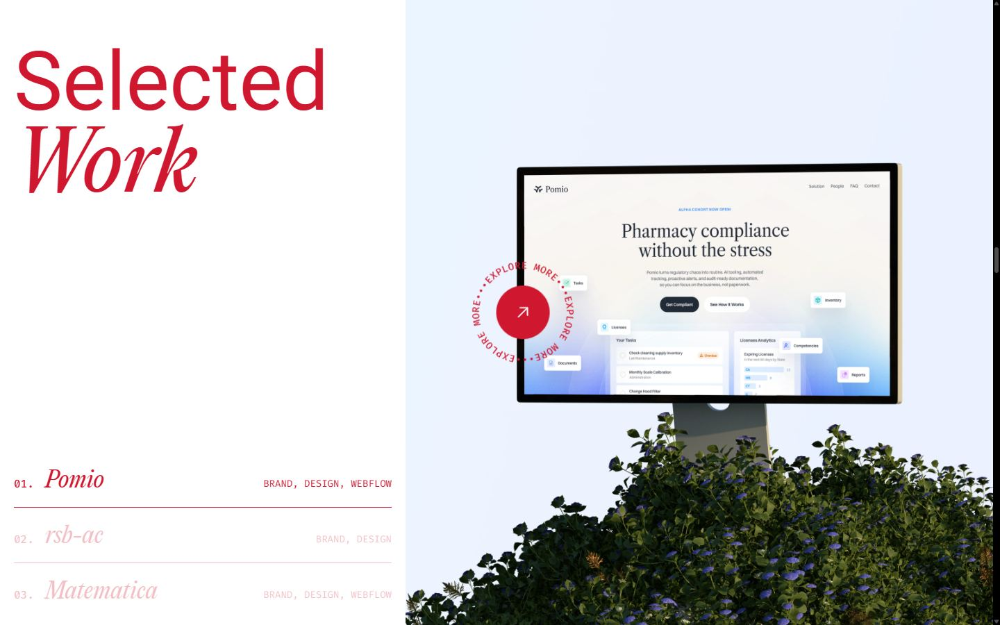
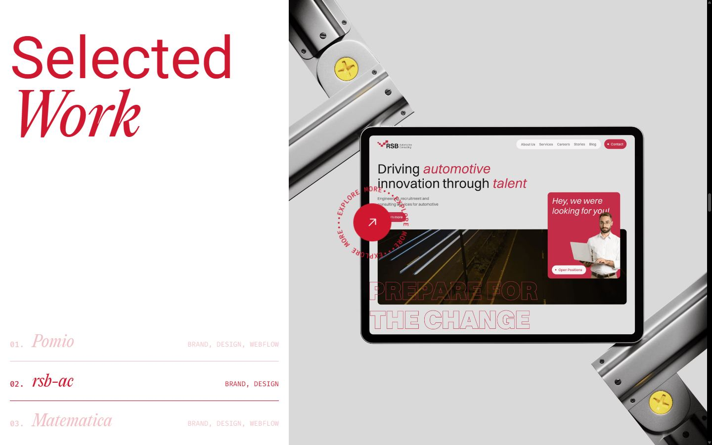
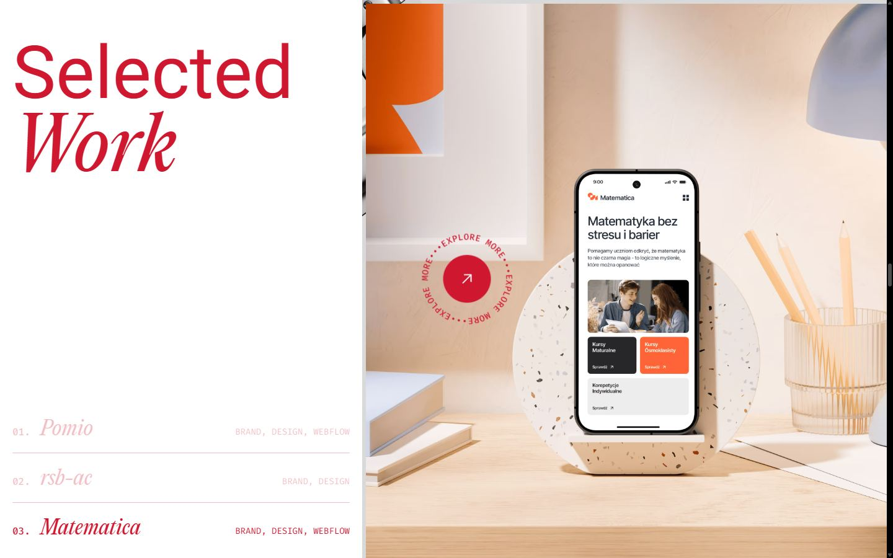
Mobile
Stack détectée
DrawSVG/MorphSVG, GSAP, Lenis, Lottie, ScrollTrigger, SplitText/SplitType, Swiper, Virtual scroll, Webflow, jQuery
Versions : GSAP 3.15.0 · Three.js r?
Design tokens
Couleurs (fonds, pondérées par surface)
#ffffff · #cf1830 · #070707 · #6db1f0 · #67dfff · #ff1212
Couleurs de texte
#cf1830 · #ffffff
Polices utilisées (par volume de texte)
Vazirmatn Local · Firacode Local · Italic Local · Editorial new Local
Fichiers de police chargés
Typographie
| Élément | Police | Taille | Graisse | Interligne | Interlettrage | Casse |
|---|---|---|---|---|---|---|
| h1 | "Vazirmatn Local", sans-serif | 52px | 400 | 52px | -2px | none |
| h2 | "Vazirmatn Local", sans-serif | 60px | 400 | 60px | normal | none |
| h3 | "Vazirmatn Local", sans-serif | 32px | 400 | 32px | normal | none |
| p | "Vazirmatn Local", sans-serif | 16px | 500 | 19.2px | normal | none |
| a | "Vazirmatn Local", sans-serif | 16px | 500 | 19.2px | normal | none |
| body | "Vazirmatn Local", sans-serif | 16px | 400 | 19.2px | normal | none |
Échelle des tailles de texte
14px (230) · 13px (188) · 16px (144) · 11.2px (118) · 32px (20) · 15px (14) · 60px (9) · 118px (4) · 80px (4) · 52px (3) · 20px (3) · 64px (3) · 36px (2)
Arrondis
20px · 4px · 50% · 5px
Transitions CSS fréquentes
Points de rupture (media queries)
767px · 991px · 479px · 768px · 1440px · 1920px · 992px · 480px
Animations CSS (@keyframes)
spin, pulse-animation-white, pulse-animation
Variables CSS (:root)
--_typography---font-secondary: "Vazirmatn Local",sans-serif; --_colors---text-colors--main-text-color: var(--_colors---base-colors--red); --_typography---text-size--main-text: 15px; --_typography---text-size--line-height-main: 120%; --_colors---base-colors--red: #cf1830; --_colors---base-colors--white: white; --_typography---heading-size--h1: 40px; --_typography---heading-size--line-height-100: 100%; --_typography---italic: "Italic Local",sans-serif; --_typography---font-tertiary: "Firacode Local",Arial,sans-serif; --_typography---heading-size--h2: 54px; --_typography---text-size--jumbo-text: 32px; --_typography---heading-size--h3: 32px; --_colors---bg-colors--bg-primary: var(--_colors---base-colors--white); --_colors---base-colors--blue: #6db1f0; --_typography---heading-size--line-height-110: 110%; --_colors---text-colors--headings-color: var(--_colors---base-colors--red); --_typography---font-primary: "Editorial new Local",sans-serif; --_typography---text-size--small-text: 13px; --_colors---bg-colors--bg-tertiary: var(--_colors---base-colors--red); --_colors---bg-colors--accent-color: var(--_colors---base-colors--blue); --_colors---text-colors--title-color: var(--_colors---base-colors--red); --_colors---base-colors--grey: #f8f4f4; --_colors---bg-colors--bg-secondary: var(--_colors---base-colors--grey); ---mode--collection-fb935ae5-15ff-b7cd-2257-4d818e296216: mode-b391287c-5d98-807f-e8ef-8eb70e65c981; --sb-track: #000; --sb-thumb: rgba(255, 255, 255, 0.3); --sb-thumb-hover: rgba(255, 255, 255, 0.45);
Structure de la home
Hauteur : 21534 px — 1779 nœuds DOM — canvas 1, vidéos 1, images 89
| # | Bloc | Hauteur | Titre | Médias |
|---|---|---|---|---|
| 1 | section .section light _30vh_mobile | 500 | 0 | |
| 2 | section .section dark video | 1800 | We build websites forpeople who careas much as we do | 1 |
| 3 | section#process .section light | 5363 | Your website isn't an expensive decoration. It's the sharpest point of your digi | 4 |
| 4 | section .section light desktop_version | 3600 | Selected Work | 3 |
| 5 | section#pricing .section dark above | 9000 | Essentials | 68 |
| 6 | section#hover-section .section light hover | 790 | Ready to get yourbusiness in shape? | 0 |
| 7 | div .footer | 481 | 0 |
Navigation :
Boutons / CTA :
SEO
Plan des titres
Performance (mesure locale, Chrome headless, connexion non bridée)
Mobile
Fichiers
captures/ : arrivée, scroll desktop (1440×900), pleine page, pages internes, mobile (390×844 @2x) ; vidéo de scroll dans la release GitHub « videos » (lien en haut de fiche)page.html : DOM rendu · styles.css : CSS chargé · scripts/ : JS chargé (index dans _index.json) · shaders.glsl : shaders extraits · rea-bundle.json : analyse REA du bundle (chunks, routes, endpoints)